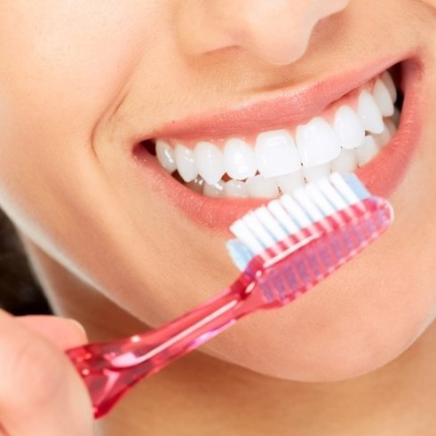
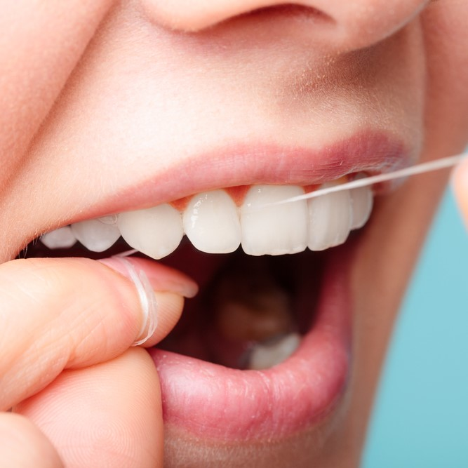
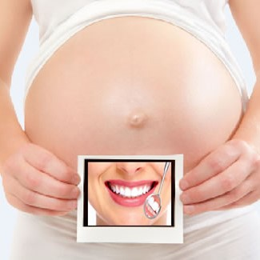
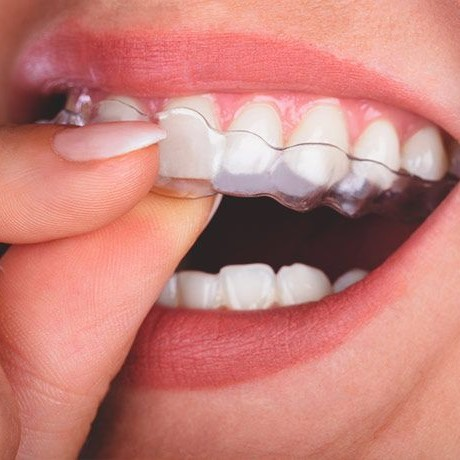
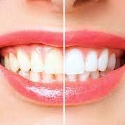
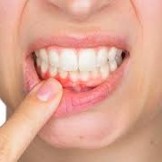

CONSEJOS

Cepillado dental
En el momento de elegir tu cepillo dental, estos son los detalles que podés tener en
cuenta:
Lo ideal es que sea suave, o a lo sumo mediano. La funcion del cepillado es el arrastre mecánico de la
placa bacteriana, por lo tanto no se necesitan cepillos duros ya que pueden resultan muy abrasivos
para
el esmalte y agresivos para la encía

Limpieza Interdental
La pérdida de dientes en los adultos en la mayoría de los casos se debe a
enfermedades gingivales.
Una de las principales causas de enfermedades de las encías es la placa. Si se permite que la placa se
acumule sobre nuestros dientes y encías, puede inflamarlas e infectarlas.
Al punto en que 1 de cada 4 personas mayores de 35 años las padece o ha padecido.

Embarazo y Salud Bucal
Los cambios hormonales que experimenta el organismo durante el embarazo pueden
aumentar el riesgo de desarrollar enfermedades gingivales.Provocando fluctuaciones hormonales que
pueden
sensibilizar las encías haciéndolas más
vulnerables a la placa bacteriana.
Si se presentan indicios de enfermedad gingival, estos pueden empeorar durante el embarazo.

Bruxismo
El bruxismo es el hábito involuntario de apretar, frotar o rechinar los dientes.
Esto puede conllevar dolor de cabeza y músculos de la mandíbula, cuello y oído, y que los dientes se
desgasten progresivamente.
Su principal desencadenante son causas psicológicas y stress. Para tratarlo se utiliza una placa
relajante que se coloca durante la noche.

Blanqueamiento
Existen muchos tipos de blanqueamiento dental, pero no todos tienen la misma eficacia. El
odontólogo debe ser quien le recomiende el que más se ajusta a sus necesidades.
La intensidad de blanqueamiento dependerá de cada paciente, de su color particular que deberá ser
estudiado por el especialista para determinar las expectativas del blanqueamiento.

Encias y sangrado
Las encías sangrantes pueden ser un signo de que usted tiene o está en riesgo de enfermedad
periodontal. El sangrado persistente de las encías puede deberse a la acumulación de placa en los
dientes. También puede ser una señal de una afección médica grave.
Lo mejor es que se lo consultes a tu dentista tan pronto como sea posible.